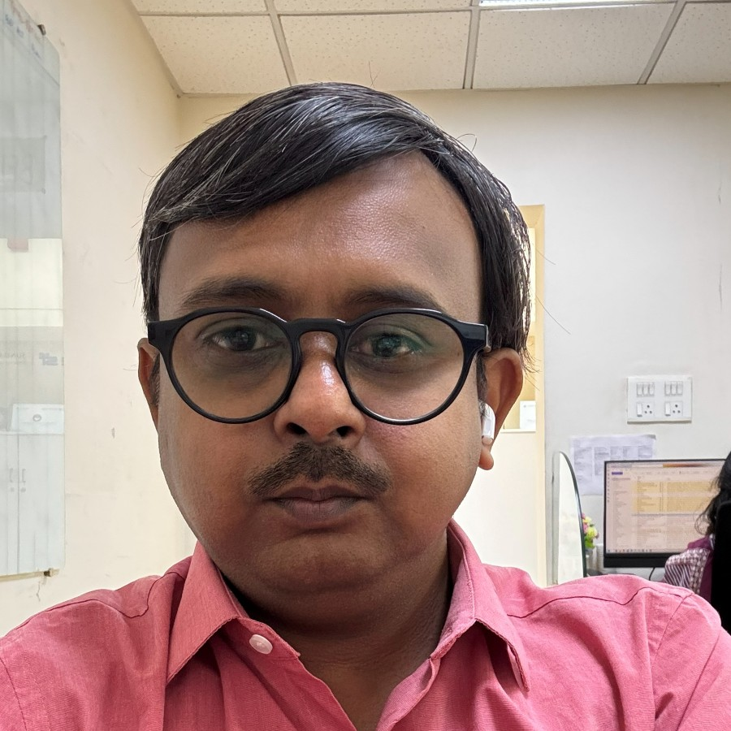

Customer and branch experience
In Shahpur and Bijapur, I worked on documentation, loan processing and customer follow-up. I know how much depends on having the right information at the right step.
About me
I work in vehicle finance and I'm making the move toward product management.
I joined Sundaram Finance in 2014. Since then, I've worked in customer support, branch accounts, working capital finance and national retail analytics. Today I'm a Deputy Manager on the Auto National Retail Team in Chennai.
Loan operations gave me plenty of questions about how products are designed. I'm now working through some of those questions by building my own, alongside studying Product Management with Applied AI.
Read my resume (PDF)
What I bring to product work
In Shahpur and Bijapur, I worked on documentation, loan processing and customer follow-up. I know how much depends on having the right information at the right step.
In working capital finance, I worked with branches and channel partners on product rollout. That meant working through how the product would be explained and used in the field.
Since April 2024, my work has included enquiry analytics, market analysis and dashboards for the national team. I use data to connect individual branch activity with a wider business picture.
How I work
For cercit, I chose salaried car loans, wrote the requirements and credit rules, and checked the build against them. For UPI recovery, I worked through what a sender should be able to do after a wrong payment. Different problems need different kinds of evidence.
I use AI for research, prototypes and implementation. I make the product decisions and review the output. Each case study describes my contribution, including where AI helped with the code.
I'm also clear about what's unfinished. cercit runs with synthetic data. HireMate and UPI recovery are concepts.
Education
Masai and iHUB DivyaSampark, IIT Roorkee
I'm applying the coursework through research, product strategy, requirements and prototypes.
Follow the course, class by classMBA, Finance
KLE's IMSR, Hubli · 2012–2014
B.Com.
Karnataka Arts & Commerce College, Dharwad · 2009–2012
Outside work
I catalogue my collection on Numista and built World of Coins to browse it by country, issuer and series. Collecting gives me another reason to build useful software, and plenty of details to get lost in.
When I'm not cataloguing coins, I'm usually gaming.
See World of Coins